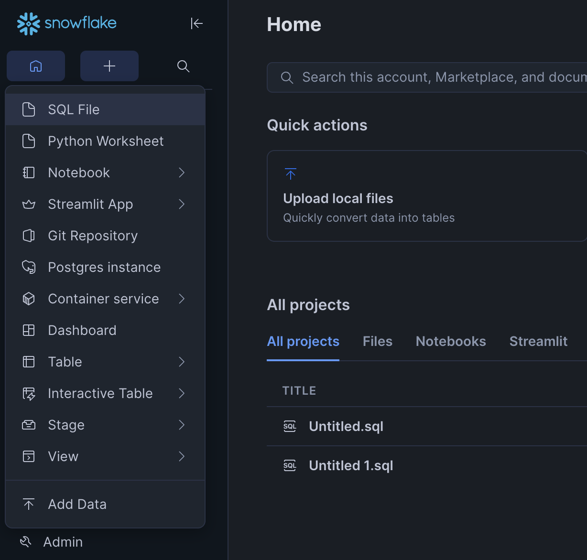
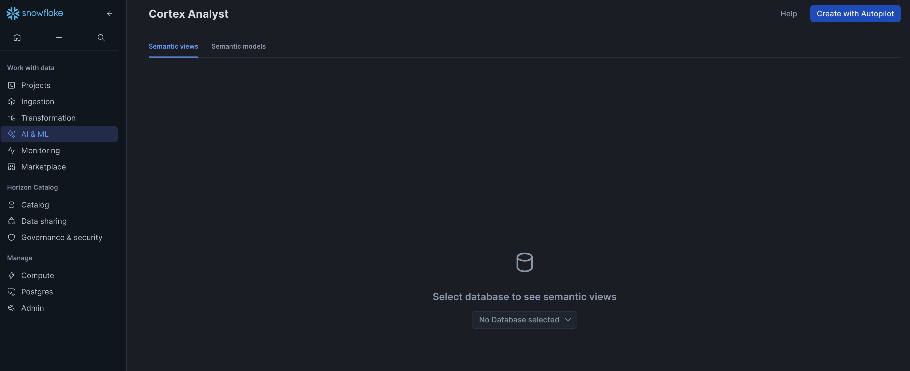
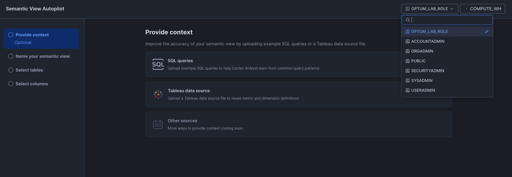
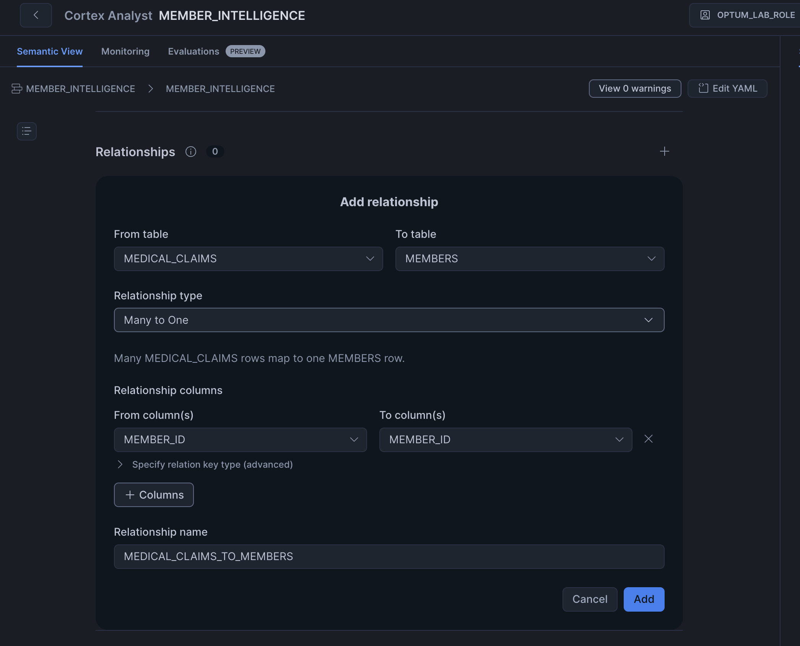

Build a Member Intelligence Agent
From Claims Data to Agentic AI on Snowflake
Starting from a synthetic payer dataset, you will build a working AI agent that answers questions about member cost drivers, care gaps, and benefit policies — all in plain English, entirely on Snowflake.
Overview
5 minOptum teams spend significant time answering recurring questions about member cost drivers, quality gaps, and care utilization. Answers are often locked inside claims databases and scattered benefit policy documents — requiring manual SQL or analyst requests that take days.
In this lab, you will build a Member Intelligence Agent: an agentic AI experience that lets any team member ask natural language questions and get answers that draw on both structured claims data and unstructured policy documents — all governed, all within Snowflake.
Payer Data
View
Analyst
Agent
Intelligence
Policy Docs
Search
What You Will Learn
- How to create a semantic view that maps business language to physical tables
- How Cortex Analyst translates natural language to SQL
- How Cortex Search enables RAG over policy documents
- How to build and configure a Cortex Agent with multiple tools
- How to use Cortex Code (CoCo) to scaffold and iterate AI artifacts
- How to surface everything through Snowflake Intelligence
What You Will Build
- A synthetic payer database loaded from the lab GitHub repository (members, claims, pharmacy, providers)
- A
MEMBER_INTELLIGENCEsemantic view via Autopilot - A Cortex Search service over benefit policy text
- A Member Intelligence Cortex Agent with your own persona and instructions
- A live Snowflake Intelligence session answering real Optum-style questions
Use Case Context — Why This Matters for Optum
This lab is grounded in three of Optum's highest-priority AI patterns:
- Cost-of-care analytics — which members, providers, and conditions are driving cost?
- Quality / Stars gap identification — which members are missing preventive services or medication adherence milestones?
- Member & contact center support — answering questions about benefits, coverage, and claims status using both structured data and policy documents
The same agent pattern you build today is a direct starting point for production use cases on SDRP.
The Dataset — What You Will Be Working With
This lab uses a fully synthetic, HIPAA-safe payer dataset modelled on a commercial health plan population. It was purpose-built for this lab — no real patient or member data is used at any point. The data closely mirrors the schemas and business logic that Optum's data engineering teams work with every day on SDRP.
Structured Data (4 Tables)
- Members — 10,000 synthetic health plan enrollees with demographics, plan type, PCP assignment, and chronic condition flags (diabetes, hypertension, COPD, etc.)
- Medical Claims — 80,000 claim lines with ICD-10 diagnosis codes, CPT procedure codes, billed/allowed/paid amounts, and claim status
- Pharmacy Claims — 35,000 prescription fills covering drug names, NDC codes, days supply, drug class, and paid amounts
- Providers — 2,000 providers with specialty, NPI, network status, and average cost per visit
Unstructured Data (3 Policy Documents)
- Formulary Guidelines — drug tiers, prior authorization rules, step therapy requirements, GLP-1 and specialty drug policies
- Medical Benefits Summary — coverage rules for preventive care, specialist referrals, mental health, physical therapy, and durable medical equipment
- Quality & Stars Measures — HEDIS measure definitions, Stars thresholds, eligible member criteria for colorectal screening, diabetes care, medication adherence
Agent Outcome — What Your Agent Will Be Able to Do
By the end of this lab you will have a running Member Intelligence Agent that any Optum team member — analyst, care manager, or operations lead — can query in plain English. The agent will be able to:
Prerequisites
5 minWhat You Need
- A Snowflake Trial Account — use the event link provided by your instructor to sign up (free, no credit card required). Do not use the generic signup.snowflake.com link — the event link ensures your account is provisioned correctly for this lab.
- When signing up via the event link, select Microsoft Azure as the cloud provider and Central India (Pune) as the region — this keeps the lab geographically close and on the same cloud as Optum's production environment
- A modern web browser (Chrome or Edge recommended)
- The lab guide — open sfc-gh-amdhingra.github.io/ai-snowcamp-lab/ in your browser. All SQL, instructions, and assets are served from the public GitHub repository — no ZIP file to download.
Azure Central India has native support for Snowflake Cortex embedding models and several AI functions. For the full LLM model suite required by Cortex Analyst, Cortex Agents, and Snowflake Intelligence, we enable cross-region inference to route requests to Azure US — staying entirely within the Azure global network (no public internet traversal).
Snowflake Features Used
| Feature | Purpose in This Lab | Where in Snowsight |
|---|---|---|
| Semantic View Autopilot | Auto-generate a semantic view from your payer tables using AI — no YAML hand-coding required | AI & ML → Analyst → Create new → Autopilot |
| Cortex Analyst | Text-to-SQL over structured payer data via the generated semantic view | AI & ML → Analyst |
| Cortex Search | Vector search and RAG over benefit policy documents | AI & ML → Search |
| Cortex Agents | Orchestrate Analyst + Search into a single AI agent | AI & ML → Agents |
| Cortex Code (CoCo) | Generate agent instructions, persona, and tool descriptions; iterate mid-lab | Bottom-right chat icon in Snowsight, or CLI |
| Snowflake Intelligence | Enterprise chat UI — surface your agent to any business user | intelligence.snowflake.com |
Setup & Data Load
10 minThis step has two parts: first enable cross-region LLM inference (required for Azure Central India), then run setup.sql to create your tables, load the lab data, and configure your lab environment. Both are done from a SQL Worksheet and take about 3–4 minutes total.
Step 3a — Enable Cross-Region Inference Required
Azure Central India has native support for Snowflake Cortex embedding models, but the full LLM suite needed for Cortex Analyst, Cortex Agents, and Snowflake Intelligence requires cross-region inference to route requests to Azure US data centers. Traffic stays entirely within the Azure global network — it does not traverse the public internet.
In Snowsight, click the + button in the top-left toolbar and select SQL File to open a new SQL worksheet.

Paste and run the following — the first line switches your role automatically:
USE ROLE ACCOUNTADMIN; -- Enable cross-region LLM inference for Azure US and AWS US regions. -- This is required for Cortex Analyst, Cortex Agents, and Snowflake Intelligence -- from Azure Central India. Traffic stays within the Azure global network -- when routing to Azure US (East US 2), and uses mTLS over the internet -- only if falling back to AWS US (rare). ALTER ACCOUNT SET cortex_enabled_cross_region = 'AZURE_US,AWS_US'; -- Verify the setting was applied SHOW PARAMETERS LIKE 'CORTEX_ENABLED_CROSS_REGION' IN ACCOUNT;
ANY_REGION — cross-region inference is already on. The SHOW PARAMETERS command will confirm this. You can still run the ALTER ACCOUNT above to pin it explicitly to AZURE_US,AWS_US, which is good practice for a payer context (limits inference to US regions only).
Why AZURE_US first, AWS_US second? Listing
AZURE_US first tells Snowflake to prefer Azure US (East US 2, West US 2) for inference — keeping data within Azure's network. AWS_US is the fallback for any models not yet available on Azure.
COPY INTO. No real member, patient, or PHI data is used at any point.
The data is designed to produce realistic answers to payer analytics questions — cost variation by condition, pharmacy adherence gaps, care quality opportunities — so your agent responses feel genuine, not toy-like.
Step 3b — Connect the Lab Repo and Run Setup
Open a new SQL Worksheet in Snowsight. Make sure your role is ACCOUNTADMIN. Copy and run the bootstrap snippet below — it takes under 2 minutes and handles everything automatically.
What this does in one pass:
- Creates a Git Repository object connected to the public lab GitHub repo (no credentials required — it's a public repo)
- Fetches the repo contents into Snowflake
- Executes
setup.sqldirectly from the repo, which creates all tables, loads the data, and configures your lab environment
USE ROLE ACCOUNTADMIN; -- Create the database and schema first so the Git repository has a home. CREATE DATABASE IF NOT EXISTS OPTUM_LAB_DB; CREATE SCHEMA IF NOT EXISTS OPTUM_LAB_DB.PAYER; USE DATABASE OPTUM_LAB_DB; USE SCHEMA PAYER; -- Connect to the public lab GitHub repo (no credentials needed) CREATE OR REPLACE API INTEGRATION SNOWCAMP_LAB_GIT API_PROVIDER = git_https_api API_ALLOWED_PREFIXES = ('https://github.com/sfc-gh-amdhingra/') ENABLED = TRUE; CREATE OR REPLACE GIT REPOSITORY SNOWCAMP_LAB_REPO API_INTEGRATION = SNOWCAMP_LAB_GIT ORIGIN = 'https://github.com/sfc-gh-amdhingra/ai-snowcamp-lab.git'; ALTER GIT REPOSITORY SNOWCAMP_LAB_REPO FETCH; -- Run the full setup script from the repo EXECUTE IMMEDIATE FROM @SNOWCAMP_LAB_REPO/branches/main/assets/sql/setup.sql;
The setup.sql script (run automatically above) creates:
OPTUM_LAB_DBdatabase andPAYERschema- Four payer tables: MEMBERS, MEDICAL_CLAIMS, PHARMACY_CLAIMS, PROVIDERS
OPTUM_LAB_WHwarehouse (MEDIUM),OPTUM_LAB_ROLE, and all required grants- Loads ~127,000 rows from CSVs in the Git repo via
COPY INTO - Internal stages for lab artifacts (semantic model, policy docs)
Data Schema — What You Are Working With
These four tables represent a simplified payer data model familiar to anyone who has worked with Optum's SDRP or claims processing pipelines:
| Table | Key Columns | Row Count |
|---|---|---|
| MEMBERS | member_id PK · name · dob · gender · plan_id · plan_name · plan_type · pcp · chronic_condition · smoker_ind · enrollment_start · enrollment_end | ~10,000 |
| MEDICAL_CLAIMS | claim_id PK · member_id FK · service_date · provider_id · icd10_code · procedure_code · billed_amt · allowed_amt · paid_amt · claim_status · service_type | ~80,000 |
| PHARMACY_CLAIMS | rx_id PK · member_id FK · drug_name · ndc_code · drug_class · days_supply · paid_amt · fill_date · prescriber_id | ~35,000 |
| PROVIDERS | provider_id PK · name · specialty · npi · network_status · location · avg_cost_per_visit | ~2,000 |
Verify the Load
SELECT 'MEMBERS' AS tbl, COUNT(*) AS row_count FROM MEMBERS UNION ALL SELECT 'MEDICAL_CLAIMS', COUNT(*) FROM MEDICAL_CLAIMS UNION ALL SELECT 'PHARMACY_CLAIMS',COUNT(*) FROM PHARMACY_CLAIMS UNION ALL SELECT 'PROVIDERS', COUNT(*) FROM PROVIDERS;
You should see non-zero row counts for all four tables before proceeding.
Explore the Dataset
Run these five queries to get familiar with the data and to seed query history — Semantic View Autopilot in Step 4 uses your account's query history to suggest better metrics and dimensions, so running these now improves the generated view.
USE ROLE OPTUM_LAB_ROLE; USE WAREHOUSE OPTUM_LAB_WH; USE DATABASE OPTUM_LAB_DB; USE SCHEMA PAYER; -- 1. Member population by chronic condition SELECT chronic_condition, COUNT(*) AS member_count FROM MEMBERS GROUP BY 1 ORDER BY 2 DESC; -- 2. Medical spend by service type SELECT service_type, COUNT(*) AS claims, ROUND(SUM(paid_amt), 0) AS total_paid FROM MEDICAL_CLAIMS GROUP BY 1 ORDER BY 3 DESC; -- 3. Top 10 drugs by total pharmacy spend SELECT drug_name, drug_class, COUNT(*) AS fills, ROUND(SUM(paid_amt), 0) AS total_paid FROM PHARMACY_CLAIMS GROUP BY 1, 2 ORDER BY 4 DESC LIMIT 10; -- 4. Total medical cost of care by chronic condition (member + claims join) SELECT m.chronic_condition, COUNT(DISTINCT m.member_id) AS members, ROUND(SUM(mc.paid_amt), 0) AS total_medical_paid FROM MEMBERS m JOIN MEDICAL_CLAIMS mc ON m.member_id = mc.member_id GROUP BY 1 ORDER BY 3 DESC; -- 5. Provider utilization and average paid by specialty SELECT p.specialty, p.network_status, COUNT(*) AS claims, ROUND(AVG(mc.paid_amt), 2) AS avg_paid_per_claim FROM MEDICAL_CLAIMS mc JOIN PROVIDERS p ON mc.provider_id = p.provider_id GROUP BY 1, 2 ORDER BY 3 DESC LIMIT 10;
These queries touch all four tables and exercise key dimensions and measures — this is exactly the pattern Autopilot looks for when building the semantic view in Step 4.
Cortex Analyst — Semantic View Autopilot
15 minCortex Analyst translates natural language questions into SQL — but it needs a semantic view to understand your data. A semantic view maps business concepts like "total cost of care", "care gap", and "medication adherence" to the physical tables and columns in your database.
Rather than hand-authoring a YAML file, you will use Semantic View Autopilot — Snowflake's AI-powered feature that inspects your tables and generates a complete, business-ready semantic view automatically.
OPTUM_LAB_DB.PAYER.Step 4a — Open Cortex Analyst
In Snowsight, navigate to AI & ML → Analyst in the left navigation.
The page will load showing a "No Database selected" dropdown in the centre. Click it and select OPTUM_LAB_DB, then select the PAYER schema. This is required before Autopilot can discover your tables.

OPTUM_LAB_ROLE — not ACCOUNTADMIN or PUBLIC. Autopilot will only see the tables and stages granted to the active role.

Step 4b — Run Autopilot on Your Payer Tables
- Click Create with Autopilot in the top-right corner of the Analyst page.
- Provide context (Step 1 of wizard): optionally import a Tableau export or SQL file to seed the view. Skip this for now — click Next.
- Name your semantic view (Step 2 of wizard): enter exactly
MEMBER_INTELLIGENCEand confirm the database isOPTUM_LAB_DBand schema isPAYER.
This name is referenced throughout the rest of the lab — do not change it. - Select tables (Step 3 of wizard): add all four lab tables:
OPTUM_LAB_DB.PAYER.MEMBERS
OPTUM_LAB_DB.PAYER.MEDICAL_CLAIMS
OPTUM_LAB_DB.PAYER.PHARMACY_CLAIMS
OPTUM_LAB_DB.PAYER.PROVIDERS - Select columns (Step 4 of wizard): review the column list. Leave Sample data and Add AI-generated descriptions checked — these improve the quality of the generated view.
- Click Create. Autopilot will take 30–60 seconds to inspect the schema and produce the semantic view.
paid_amt to a "Total Paid Amount" measure, icd10_code to a "Diagnosis" dimension, and so on. This is the "business translation layer" that makes Cortex Analyst accurate.Step 4c — Review the Generated Semantic View
Autopilot will present a draft semantic view. Review the following sections before saving:
| Section | What to Check |
|---|---|
| Relationships | Autopilot may not detect relationships automatically — check the Relationships section shows all three. If it shows 0, add them manually using the + button:
 |
| Measures | Confirm cost metrics use SUM(paid_amt) from the correct table (medical vs pharmacy). Check that days_supply is recognized as an adherence metric. |
| Dimensions | Confirm chronic_condition, plan_type, specialty, and icd10_code are listed as filterable dimensions |
| Verified queries | Review any sample questions Autopilot generated. Try one in the test panel to confirm it returns correct SQL. |
If anything looks wrong, use the inline editor to adjust individual fields — or click Regenerate with a more specific business context description.
Step 4d — Save and Test
- Give the semantic view the name
MEMBER_INTELLIGENCE. - Set the save location to schema
OPTUM_LAB_DB.PAYER— Autopilot creates a native Snowflake view object here, not a file. - Click Save. The view is now a first-class object in your database:
OPTUM_LAB_DB.PAYER.MEMBER_INTELLIGENCE. - In the test panel on the right, try this question:
"What are the top 5 chronic conditions by total paid amount?"
You should see a SQL query generated and a data table returned.
COPY FILES INTO @OPTUM_LAB_DB.PAYER.SEMANTIC_MODELS FROM @SNOWCAMP_LAB_REPO/branches/main/assets/semantic_models/ FILES = ('member_intelligence.yaml');Note: If using the YAML fallback, the agent tool in Step 6 must reference the stage file path instead of the semantic view object.
Cortex Search — Index Benefit Policy Documents
10 minYour agent needs to answer questions that can't be answered from claims tables alone — questions like "What is the prior authorization process for GLP-1 medications?" or "Does our plan cover physical therapy for non-surgical back pain?". These answers live in benefit policy documents.
You will use Cortex Search to index three synthetic policy documents and make them retrievable by your agent.
Step 5a — Stage Policy Documents
The three policy documents live in the lab GitHub repo. Run the following SQL to copy them from the Git repository stage into your internal POLICY_DOCS stage. This is the same SNOWCAMP_LAB_REPO stage you used during setup — it's available throughout the lab, not just for bootstrapping.
USE ROLE OPTUM_LAB_ROLE; USE DATABASE OPTUM_LAB_DB; USE SCHEMA PAYER; COPY FILES INTO @POLICY_DOCS FROM @SNOWCAMP_LAB_REPO/branches/main/assets/documents/ FILES = ('formulary_guidelines.txt', 'medical_benefits_summary.txt', 'quality_stars_measures.txt'); -- Verify: should show 3 files LIST @POLICY_DOCS;
The three documents covering:
formulary_guidelines.txt— drug formulary tiers, PA requirements, GLP-1 and specialty drug rulesmedical_benefits_summary.txt— coverage rules for preventive care, specialist visits, mental health, PTquality_stars_measures.txt— HEDIS/Stars measure definitions, thresholds, member eligibility criteria
Step 5b — Create the Cortex Search Service
Run the following SQL in your worksheet to create a table from the staged documents and build the search service on it:
USE ROLE OPTUM_LAB_ROLE; USE DATABASE OPTUM_LAB_DB; USE SCHEMA PAYER; USE WAREHOUSE OPTUM_LAB_WH; -- Parse staged policy docs into a searchable table (one row per line) CREATE OR REPLACE TABLE POLICY_DOCUMENTS AS SELECT REPLACE(METADATA$FILENAME, '.txt', '') AS doc_name, $1::VARCHAR AS content FROM @POLICY_DOCS (file_format => TEXT_FORMAT) WHERE $1 IS NOT NULL; -- Create Cortex Search service over policy content CREATE OR REPLACE CORTEX SEARCH SERVICE BENEFIT_POLICY_SEARCH ON content ATTRIBUTES doc_name WAREHOUSE = OPTUM_LAB_WH TARGET_LAG = '1 hour' EMBEDDING_MODEL = 'snowflake-arctic-embed-m-v1.5' AS ( SELECT doc_name, content FROM POLICY_DOCUMENTS );
Step 5c — Test the Search Service (Optional)
SELECT SNOWFLAKE.CORTEX.SEARCH_PREVIEW( 'OPTUM_LAB_DB.PAYER.BENEFIT_POLICY_SEARCH', '{"query": "prior authorization for GLP-1 medications", "columns": ["content"], "limit": 3}' );
You should see relevant chunks from formulary_guidelines.txt in the results.
Build Your Member Intelligence Agent via CoCo
15 minNow you wire it all together. A Cortex Agent is an AI entity that orchestrates tools — Cortex Analyst for structured queries, Cortex Search for document retrieval — and responds to questions using both. This is where your personal creativity comes in: you define how the agent thinks, what it knows, and what kind of assistant it becomes.
Step 6a — Use CoCo to Create the Agent
Open CoCo in Snowsight and use the prompt below. CoCo will generate the CREATE AGENT DDL, show it to you, and ask for a yes/no approval before executing — you stay in control. Then make it your own — see the creativity prompt below.
Create a Snowflake Cortex Agent for a healthcare payer (Optum/UHG) in schema SNOWFLAKE_INTELLIGENCE.AGENTS. The agent has access to two tools: 1. Cortex Analyst tool using semantic view at: OPTUM_LAB_DB.PAYER.MEMBER_INTELLIGENCE Description: Member 360 data — medical claims, pharmacy claims, members, providers. Use for structured questions about cost, utilization, care gaps, and adherence. 2. Cortex Search tool using service: OPTUM_LAB_DB.PAYER.BENEFIT_POLICY_SEARCH Description: Benefit policy and formulary documents. Use for questions about coverage rules, PA requirements, HEDIS/Stars criteria. Also generate: a) A set of orchestration instructions that tell the agent: - When to use Analyst vs Search vs both - How to format responses (use tables for structured data, prose for policy questions) - How to cite sources (mention the document name for policy answers) b) 5 starter example questions to show users what the agent can do c) A display name and persona appropriate for a payer organization Use warehouse OPTUM_LAB_WH for the Analyst tool.
CREATE AGENT SQL and display it for review. When you approve, it executes the DDL on your behalf — no need to open Snowsight Agents manually.CoCo will give you a solid starting point. Now customize the agent's persona, instructions, and tone to reflect how you'd actually want a Member Intelligence Agent to behave at Optum. Some ideas to spark your thinking:
- Give it a name and voice — e.g. "OptumInsight Assistant", "Care Analytics AI", or something your team would actually use
- Scope its expertise — should it focus on cost analytics only? Quality/Stars? Pharmacy? Or be the generalist member 360 agent?
- Define its tone — clinical and precise? Accessible for non-technical managers? Proactive in surfacing trends?
- Add a guardrail — e.g. "Never speculate on individual member diagnoses. Always recommend consulting a clinician for clinical decisions."
- Add a signature behavior — e.g. "When showing cost data, always compare to the plan average as context."
Ask CoCo: "Update the agent instructions to reflect [your persona idea]. Keep the tool routing logic but change the tone and add this guardrail: [your rule]."
Step 6b — Iterate and Personalise
Once CoCo has created the agent, customise it further. Ask CoCo to update the instructions to reflect your own persona and guardrails — it will generate updated DDL and ask for approval again before applying changes.
Snowflake Intelligence — Open Your Agent
15 minSnowflake Intelligence is the enterprise chat interface built on top of Cortex Agents. It's the "AI front door" your agent will be accessed through — no code, no SQL, just a conversation.
Step 7a — Access Snowflake Intelligence
- Navigate to intelligence.snowflake.com and sign in with your trial account credentials.
- Make sure you are signed in with the correct role (
ACCOUNTADMINorOPTUM_LAB_ROLE). - In the left panel, you should see the agent you just created. Click on it to open a new conversation.
SNOWFLAKE_INTELLIGENCE.AGENTS schema and that your current role has access to that schema. Run GRANT USAGE ON SCHEMA SNOWFLAKE_INTELLIGENCE.AGENTS TO ROLE OPTUM_LAB_ROLE; if needed.Step 7b — Ask Your First Question
Start with the example questions CoCo surfaced in Step 6, or try your own. Observe how the agent:
- Routes structured questions to Cortex Analyst (generates SQL → returns data table or chart)
- Routes policy questions to Cortex Search (retrieves document chunks → synthesizes prose response)
- Combines both for hybrid questions (e.g. "Which members with diabetes are on a Tier 1 insulin formulary?")
Step 7c — Iterate with CoCo (If Time Allows)
If the agent's responses aren't quite right, open CoCo alongside Snowflake Intelligence and ask it to refine the instructions:
My agent returned a table when I asked about top members by cost, but
it didn't include their chronic condition. Update the Cortex Analyst tool description
to always encourage joining MEMBERS.chronic_condition when the question
involves member-level cost analysis.
Ask Your Agent — Optum-Flavored Sample Queries
10 minUse the questions below to explore what your agent can do. They span all three payer use cases: cost-of-care analytics, quality/Stars gap identification, and member policy support. Share the most interesting answers with your table.
Wrap-up & Next Steps
5 minWhat You Built Today
- A synthetic payer data foundation — four tables covering members, medical claims, pharmacy, and providers
- A semantic view (
OPTUM_LAB_DB.PAYER.MEMBER_INTELLIGENCE) that maps Optum business concepts to physical columns — generated and refined with Autopilot - A Cortex Search service over benefit policy and formulary documents — enabling RAG over unstructured content
- A Cortex Agent with your own persona, instructions, and tool configuration — built and iterated with CoCo
- A live Snowflake Intelligence session that any business user could access without writing a single line of SQL
From Lab to Production
Where Do You Go From Here?
The pattern you built today is a direct template for production use cases on Optum's SDRP platform. Here are the natural next steps: